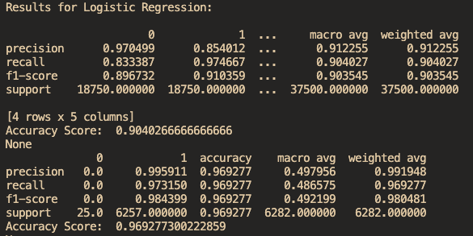
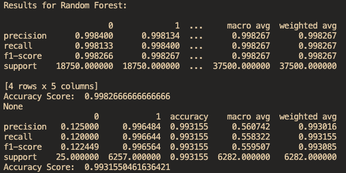

Machine Learning Model
Training
Before beginning to train the model, I first split the dataset into a training set and testing set. Then, SMOTE (Synthetic Minority Oversampling Technique) was applied to the dataset due to a disparity between approved and denied applicants. SMOTE creates synthetic examples for the minority class which are the denied applicants. As this is a classification problem, I chose to evaluate the 4 algorithms below on the dataset to determine which one the model will use for training. Screenshots of the metrics for each model are displayed with the training set on top and testing set on bottom.
Logistic Regression Algorithm
Logistic regression uses the logistic function to estimate the probability of an event occurring based on previous data.

K-Nearest Neighbors Algorithm
K-nearest neighbors classifies an object based on the class that is most common among its k-nearest neighbors.

Decision Tree Algorithm
Decision tree uses a tree-like model of decisions to predict the value of a target variable based on multiple features.
Random Forest Algorithm
Random forest uses multiple decision trees and predicts the class that is selected by the most trees.

Conclusion
Based on the accuracy scores of each model, the random forest algorithm had the best performance on both the training and testing sets with logistic regression performing the worst. Random forest will typically provide a high accuracy and is less prone to overfitting the data. With its great performance on the dataset, I chose random forest to train the model. After training the model, I serialized it using Python's pickle module and integrated the model into the backend of the web application.